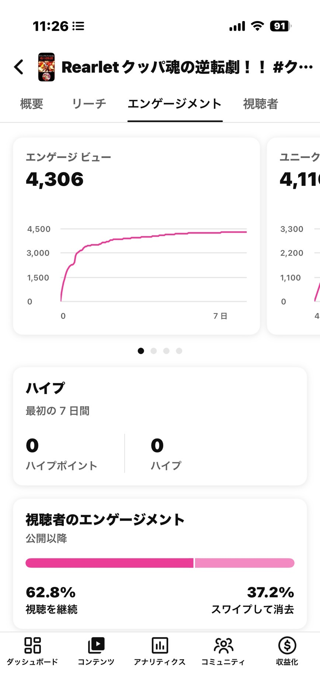
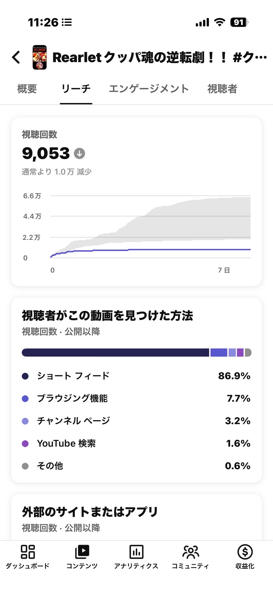
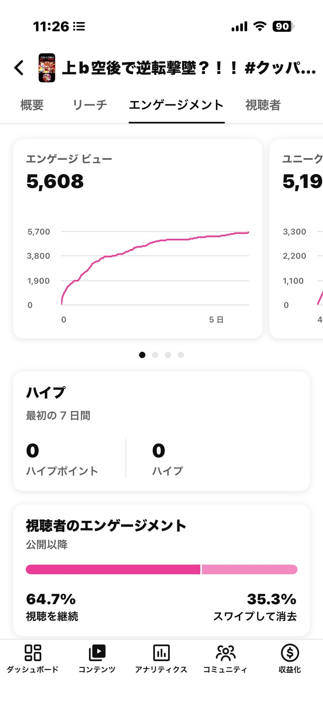
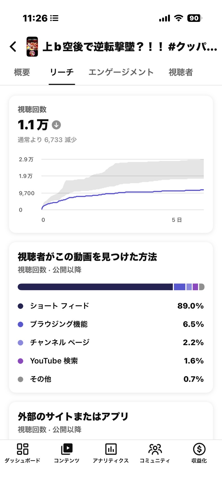
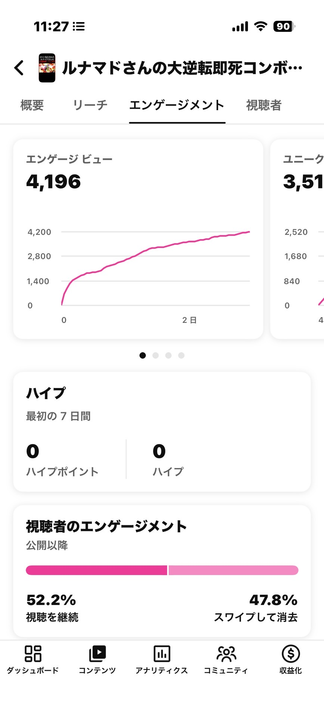
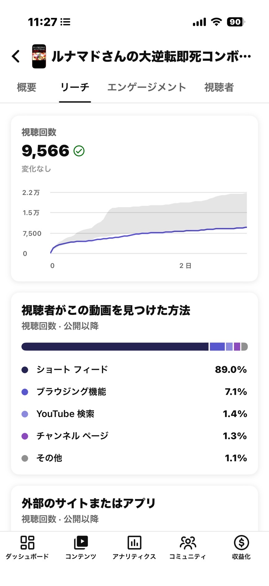
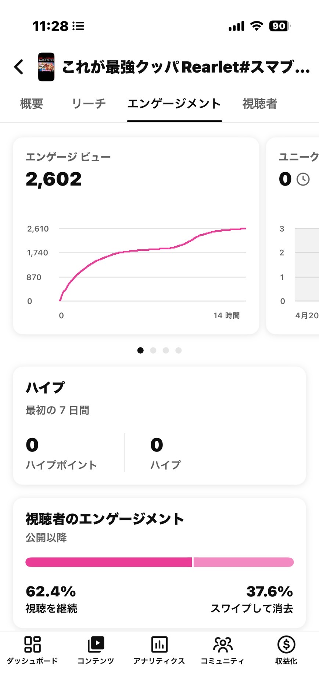
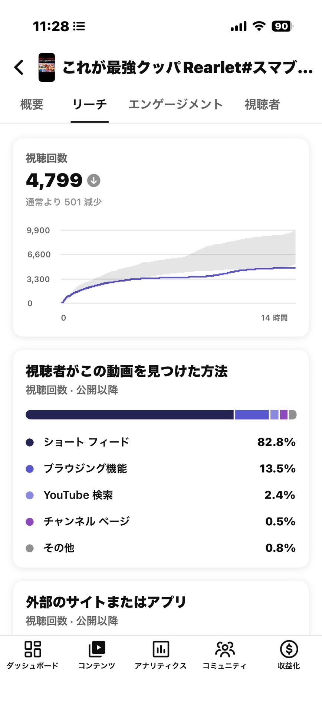

直近 4 本（4/14〜4/21）× バイラル比較（4/7）× YouTube Studio 実データ 18 スクショ。
結論：動画の中身は上位 5% 級に優秀。問題はタイトルで、アルゴリズム露出の悪循環に入っている。
一言で言うと「動画は超優秀、タイトルが悪い、露出が絞られた」。内訳は以下の3点。
直近4本＋バイラル比較動画（4/7）の主要指標。平均視聴率 100% 超 = ループ視聴発生。
| 日付 | 尺 | 再生数 | 平均視聴率 | 視聴継続 | スワイプ | Shortsフィード | 新規視聴者 |
|---|---|---|---|---|---|---|---|
| バイラル 4/7 | 45s | 136,242 | — | — | — | — | 26.0% |
| 4/14 | 25s | 9,053 | 103.7% | 62.8% | 37.2% | 86.9% | 28.6% |
| 4/16 | 22s | 11,000 | 111.8% | 64.7% | 35.3% | 89.0% | 20.3% |
| 4/19 | 43s | 9,566 | 82.5% | 52.2% | 47.8% | 89.0% | — |
| 4/21 | 56s | 4,799 | 67.4% | 62.4% | 37.6% | 82.8% | — |
Studio実データから浮かび上がった、この低下の正体。
4/14維持率103.7% / 4/16維持率111.8%。ショートクリエイター上位5%級。直近の再生数低下は動画の質低下ではない。
「通常より1.0万減」「通常より6,733減」とStudioが明示。アルゴリズムがこのチャンネルを通常より露出していない直接の証拠。
平均視聴率 103.7% → 111.8% → 82.5% → 67.4%。4/19のスワイプ離脱47.8%が判定の決定打になった。
4/21だけ86.9%→82.8%に-6.2pt。代わりにブラウジングが13.5%に上昇 = フィードから弾かれ他経路に依存し始めた。
バイラル時は男性94.3%、18-34歳60%超、ライト層73.8% / コア層0.2%。ほぼ全員がスマブラ詳しくない層。
4/14は28.6%、4/16は20.3%、4/19・4/21は「データ不足」で表示不能。新規リーチが実質ゼロに。
なぜ「動画は優秀なのに伸びない」が起きるのか。時系列で起きたことを追う。
直近4本それぞれ、Studioスクショの実データで診断。
平均視聴率 103.7%でループ視聴発生。動画の完成度は最高だが、 タイトル「魂の逆転劇」が抽象的すぎてライト層に刺さらず、CTRが立たなかった可能性が高い。


平均視聴率 111.8% でループ視聴発生。動画はさらに優秀。しかし「上b空後」は マニア用語でライト層には意味不明。YouTubeが「通常より 6,733 減」と警告している。


スワイプ離脱 47.8% = 半数が最後まで見ていない。主語が「ルナマドさん（プレイヤー名）」で ライト層には響かず、43秒の中尺で冒頭フックも弱い。ここでアルゴリズムが判定を下した。


56秒の長尺 × 自称系タイトル × Shortsフィード率 -6.2pt。 編集・タイトル・露出のすべてが負のスパイラルに入っている。平均視聴率は 67.4% まで低下。


今日から打てる3つのアクション。優先度順。
過去バイラル 4 本は全て具体・一般語彙だった。マニア用語・プレイヤー名・抽象語は捨てる。
バイラル4本の平均は 39秒。4/21の56秒は明確にNG。編集で30秒前後まで詰める。 短いほど視聴維持率が出やすい。
4/19のスワイプ47.8%は冒頭離脱が多い。 0秒時点でキルシーン or 煽りテロップを置き、「続きが気になる」状態を作る。
アルゴリズムに「伸ばすと危険」と判定されかけている現状、復活には高維持率 × 高CTRの動画を連続で出す必要がある。 過去バイラルから逆算した刺さる型は以下3つ。
タイトル改革は次の1本からすぐ始められます。
「世界一◯◯」「最強の◯◯使い」「ヤバい技」で投稿する。NGタイトル表の OK 欄を参考にそのまま使って OK。
ハンデ縛り型 / 有名人×敗北型 / 新技お披露目型のいずれかで、高クオリティの動画を 2 本連投。アルゴリズム判定をリセット。
「通常より減少」警告が消えているか、Shortsフィード率が 89% 台に戻っているか、新規視聴者率が 25% 以上に回復しているかを確認。
今回取得できなかったデータ。追加でもらえれば、バイラル基準（Shortsフィード率・視聴継続率・平均視聴率）と直近の差分が数値で出せる。
動画の中身は問題ない。むしろ上位5%級。
問題はタイトルで、アルゴリズム露出の悪循環に入っている。
タイトル改革＋尺30-45秒＋2本連投で、相当回復できる。